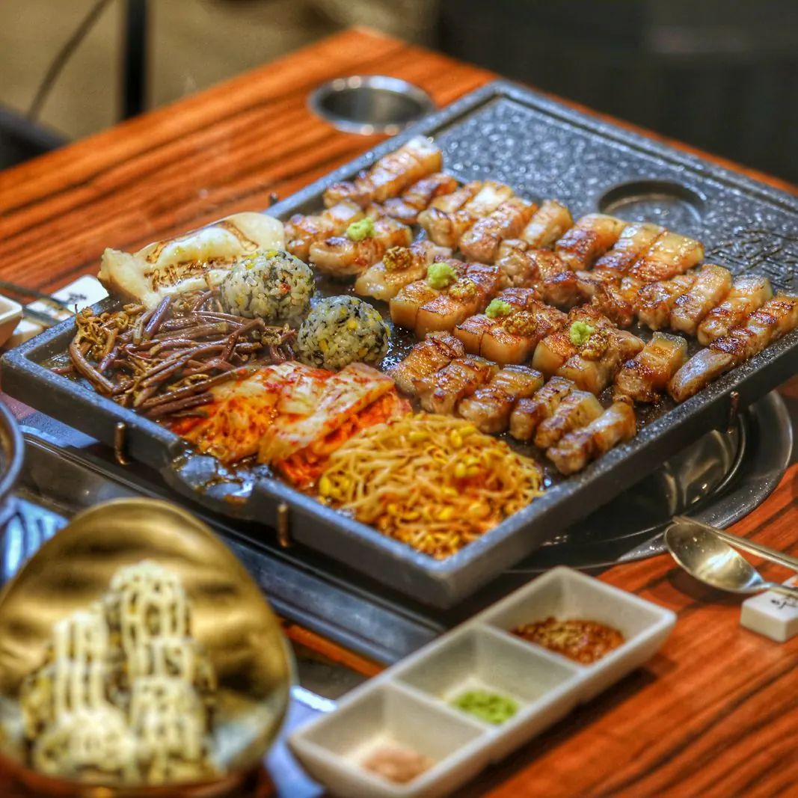

평일 점심
제주덕구 삼성점은 월요일부터 금요일까지 11:00~14:30에 점심 메뉴를 냅니다. 제주돼지 김치찌개 정식과 차돌된장 정식은 10,900원, 제주식 제육두루치기는 1인 11,900원(2인 이상 주문)입니다.
 제주식 제육두루치기11,900원
제주식 제육두루치기11,900원 제주돼지 김치찌개 정식10,900원
제주돼지 김치찌개 정식10,900원 차돌된장 정식10,900원
차돌된장 정식10,900원

 삼성동 불판 위에서
삼성동 불판 위에서제주덕구 삼성점은 삼성역·코엑스 근처에서 제주에서 주 3회 직송받은 제주돼지를 직원이 테이블에서 직접 구워 드리는 고깃집입니다.
제주덕구 삼성점은 삼성역과 코엑스 가까이에서 제주돼지를 즐길 수 있는 고깃집입니다. 제주에서 주 3회 직송받은 오겹살과 목살을 1인분 200g으로 내고, 가브리살·항정살 같은 특수부위와 하루 20인분만 준비하는 찐꽃갈비살도 있습니다.
고기와 함께 차돌된장술밥, 버터불닭오징어, 냉 김치말이국수를 많이 찾으시고, 제주식 멜조림에 고기를 찍어 드시는 손님이 많습니다.
오겹살과 목살은 제주에서 주 3회 직송받습니다.
오겹살·목살 200g, 가브리살·항정살 160g. 모두 19,000원입니다.
직원이 초벌하고 잘라 테이블에서 구워 드립니다. 김치, 콩나물, 고사리도 함께 굽습니다.
고사리와 밑반찬은 셀프바에서 원하는 만큼 가져다 드세요.

찐꽃갈비살 600g, 제주 오겹살 400g, 제주 목살 200g, 차돌된장술밥, 한우육회 150g
192,000원

찐꽃갈비살 400g, 제주 오겹살 400g, 제주 목살 200g, 제주 항정살 160g, 멜조림, 알깨밥
164,000원
제주 오겹살 400g, 제주 목살 400g, 멜조림, 알깨밥
84,000원

제주 오겹살 400g, 제주 목살 200g
63,000원
찐꽃갈비살 400g, 제주 오겹살 400g, 제주 목살 200g, 제주 항정살 160g, 멜조림, 알깨밥
164,000원
제주 오겹살 400g, 제주 목살 200g
63,000원

제주에서 주 3회 직송. 부드럽게 숙성한 목살
19,000원

통멸치가 부드러워질 때까지 약 7분간 졸인 제주식 곁들임. 고기를 찍어 드세요
8,000원

차돌박이와 꽃갈비살을 넣고 진하게 끓인 된장에 밥을 넣은 식사 메뉴
15,000원

갈비뼈 6~8번 위쪽에서 떼어 낸 부드러운 소고기 부위
20,000원
제주덕구 삼성점은 월요일부터 금요일까지 11:00~14:30에 점심 메뉴를 냅니다. 제주돼지 김치찌개 정식과 차돌된장 정식은 10,900원, 제주식 제육두루치기는 1인 11,900원(2인 이상 주문)입니다.
제주식 제육두루치기11,900원제주돼지 김치찌개 정식10,900원차돌된장 정식10,900원제주덕구 삼성점에는 16명이 나란히 앉는 공간과 20명이 앉는 공간이 따로 있습니다. 매장 전체를 대관하면 약 36~40명까지 이용할 수 있고, 대관 최소 이용금액은 150만 원입니다. 별도 룸은 없고, 좌석은 모두 의자에 앉는 입식입니다.
콜키지는 와인 병당 2만 원, 위스키 등 도수 높은 술은 병당 3만 원이며 병 수 제한은 없습니다.
2호선 삼성역 5번 출구로 나와 코엑스 방향으로 직진한 뒤, 우리은행 코엑스지점 쪽 횡단보도를 건너 오른쪽으로 갑니다. 투썸플레이스 삼성도심공항점에서 왼쪽으로 꺾어 직진하고, 라우모 삼성본점에서 오른쪽 골목으로 들어오면 제주덕구 삼성점입니다. 걸어서 약 10~11분 걸립니다.
9호선 삼성중앙역 5번 출구에서는 497m, 걸어서 약 7분 거리입니다.
제주덕구 삼성점은 월요일부터 금요일까지 11:00~22:00에 영업하고, 14:30~16:00은 브레이크타임입니다. 토요일은 16:00~22:00에 저녁 영업만 하고, 일요일은 정기휴무입니다.
네, 제주덕구 삼성점은 평일(월~금) 11:00~14:30에 점심 영업을 합니다. 점심 메뉴는 제주돼지 김치찌개 정식·차돌된장 정식 10,900원, 제주식 제육두루치기 1인 11,900원(2인 이상)입니다. 토요일은 점심 영업을 하지 않습니다.
평소에는 예약 없이 제주덕구 삼성점을 찾아도 대부분 바로 앉을 수 있지만, 평일 저녁과 단체 방문은 예약을 권합니다. 2024년 11월부터 2026년 10월까지 네이버 플레이스 방문자 리뷰 230건 가운데 210건이 '대기 없이 바로 입장'을 골랐고, 151건은 예약 없이 온 경우였습니다. 다만 만석이라 몇 번 만에 들어왔다는 리뷰도 있습니다.
네, 제주덕구 삼성점에서는 직원이 고기를 초벌한 뒤 먹기 좋게 잘라 테이블에서 끝까지 구워 드립니다. 김치, 콩나물, 고사리도 불판에 함께 구워 드립니다. 네이버 플레이스에서 '직접 잘 구워줘요'를 고른 방문객은 77명입니다(2026년 10월 12일 기준).
네, 제주덕구 삼성점에는 16명이 나란히 앉는 공간과 20명이 앉는 공간이 따로 있어 단체석은 10명부터 40명까지 받습니다. 매장 전체를 대관하면 약 36~40명까지 이용할 수 있고, 대관 최소 이용금액은 150만 원입니다. 술자리 손님에게는 헛개스틱과 꿀스틱을 챙겨 드립니다.
예약은 전화나 네이버 톡톡으로 받습니다. 단체 예약과 대관도 전화로 문의해 주세요.